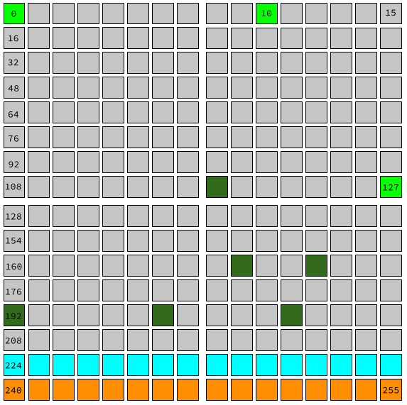

Addressing and Networks
1.Introduction
2. Special Addresses
3. Reserved IP addresses
An IPv4 address is actually a 32-bit numeric value. We usually
write it as a dotted quad — four decimal numbers,
separated by dots, like
206.190.36.45 or 180.149.132.47. Each
of the four numbers written down like this represents one
octet or 8-bit value.
But writing an IP address as four decimal numbers is just a convention to make it easier to read. When it’s used between computers, an address is transmitted in binary, just like all the other data sent over the network.
However, not all of the possible 32-bit values are used for real addresses. Some of them are used for special applications that use addresses differently. Some of them are reserved for internal private networks. Some of them are for testing or documentation.
Here's a visualization of the entire IPv4 address space. Each square represents one possible value of the first octet of an address. For instance, the square on the top right, labeled 15, represents all the IPv4 addresses that start with 15 as their first octet.

-
The light-green squares (
0,10, and127) are blocks that are entirely reserved. -
The dark-green squares are blocks that are partly
reserved. For instance, not all of the
192block is reserved, but some of it is. -
The entire cyan row (starting at
224) is set aside for IP multicast. -
And the entire orange bottom row (starting at
240) was originally set aside for "future use" but was effectively lost due to being blocked as invalid. No, really. We lost 1/16th of all IPv4 addresses due to mistaken planning.
In fact, just over one-eighth of all possible IPv4 addresses are set aside for something other than addressing public hosts.
But as you'll see, even if we did use all 32-bit addresses to represent public hosts, that still wouldn’t really be enough.